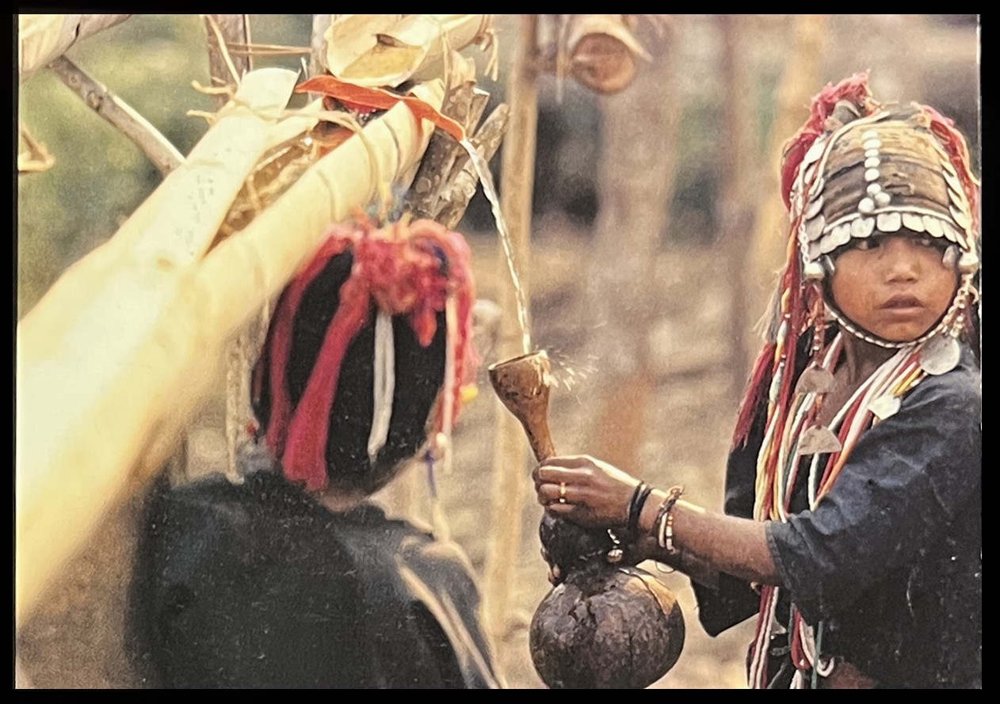
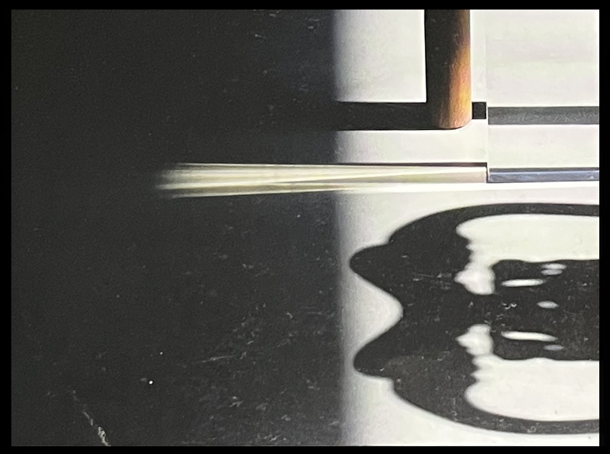
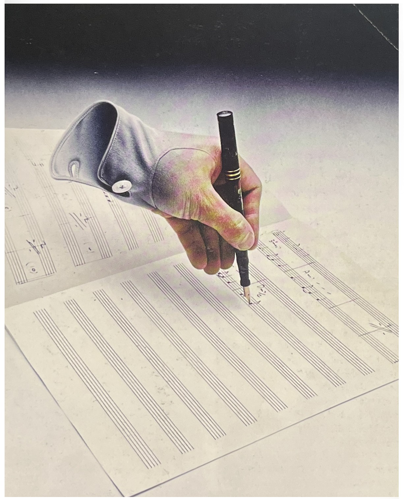
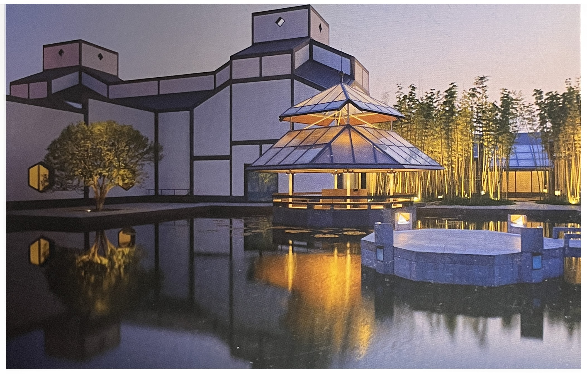
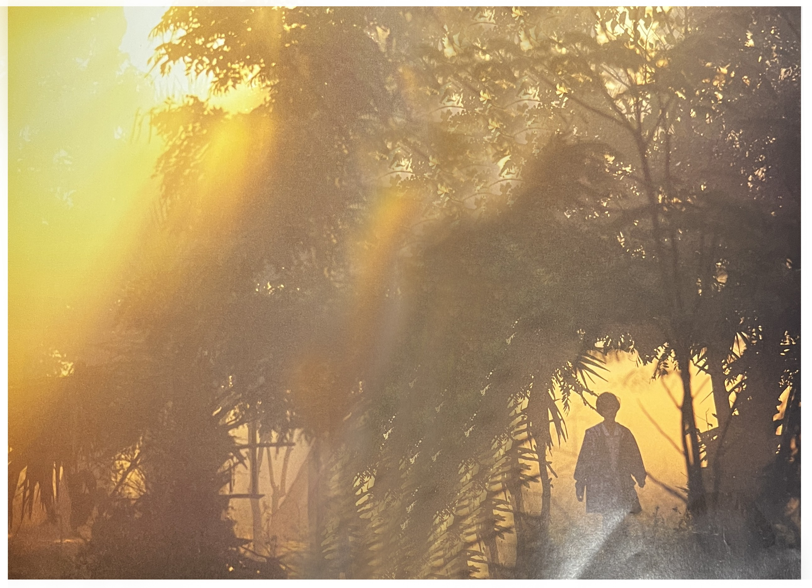
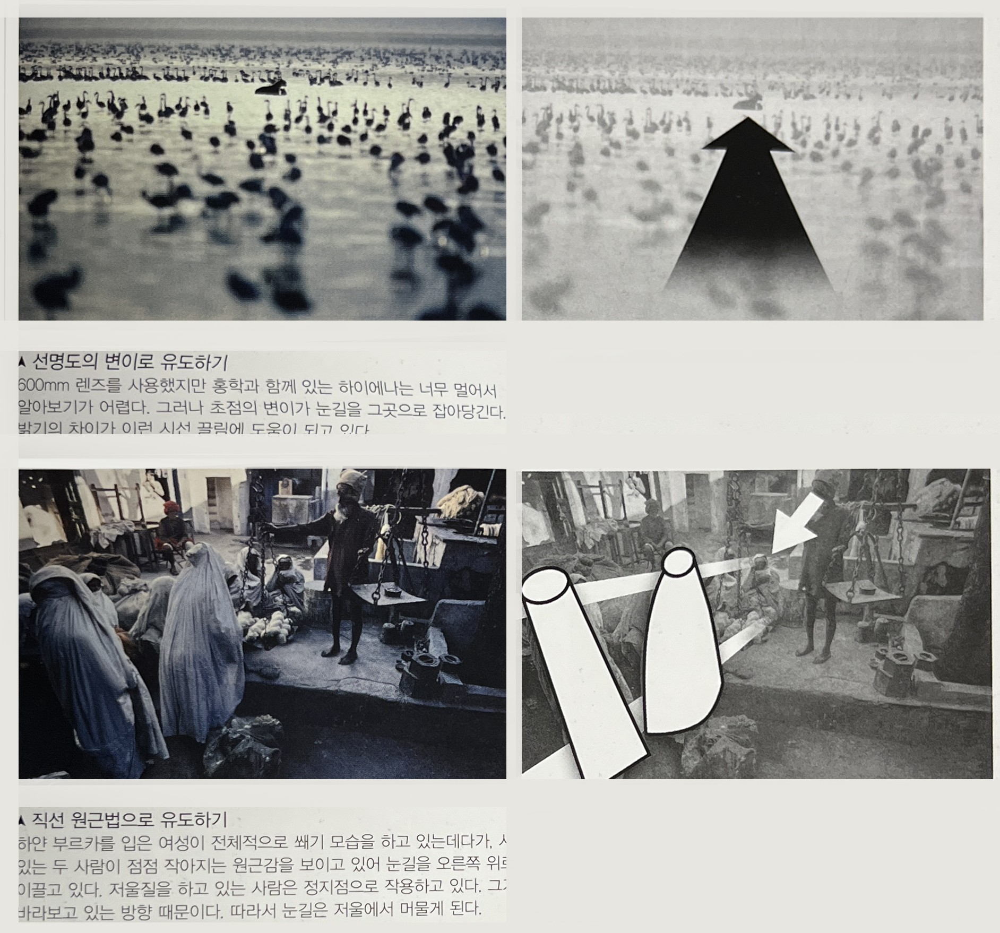
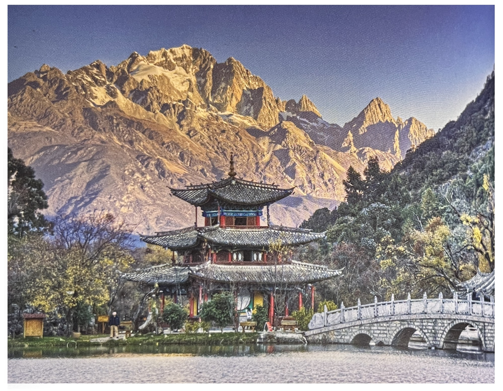
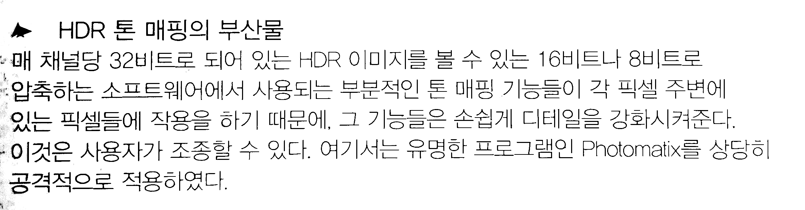
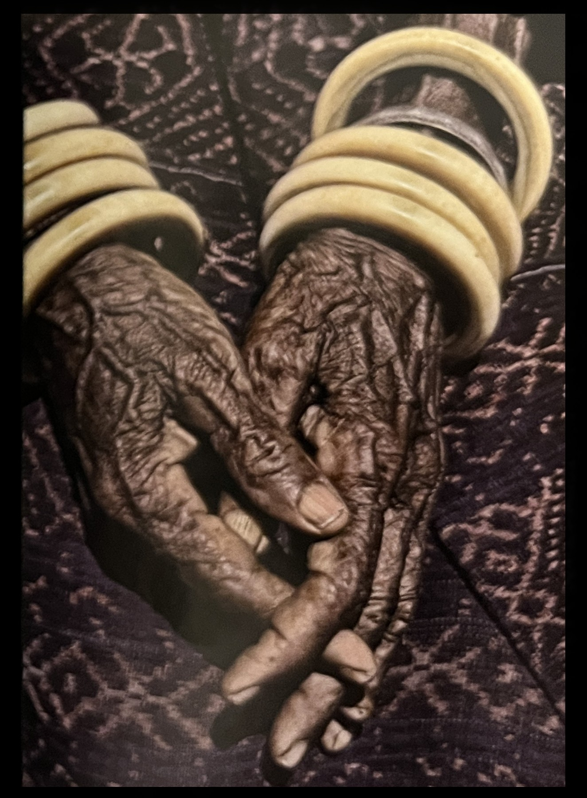
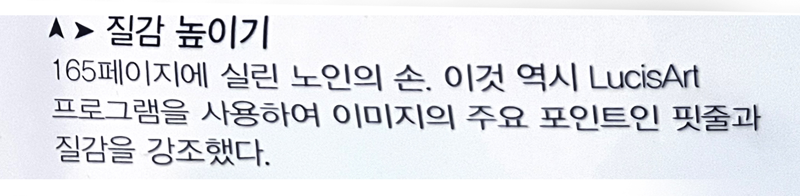

“모든 게 자동이다.
내가 할 일은 버튼을 잠시 누르는 일뿐,
아마추어 누구라도 카메라를 산다.
[잠시 머뭇거리다가, 자신의 머리를 가리킨다]
거기에 모든 것이 있다“
- 헬무트 뉴턴서론
① 일반적으로 만족스러운 것이 무엇인가를 이해해야 한다.
➪ 설령 어떤 이미지가 기술적이거나 미학적인 기본 사항들을
무시하고 있다하더라도 그 이미지는 실제로 이런 기본적인
사항들을 알고 있다는 상황을 전제해야 한다.
② 자극하고 도발해야 한다.
➪ 어떤 사진이 흥미를 유발시키고 관심을 끌지 못한다면
그것은 단순히 그렇고 그런 사진에 지나지 않는다.
③ 다층적이어야 한다.
➪ 표면적으로 회화적이면서 거기에 더 깊은 의미를 가지고
있는 사진처럼 한 가지 차원 이상으로 작용하는 이미지가
더 좋은 효과를 발휘한다. 사진을 보는 사람들이 좀 더 많은 것을
발견하고 싶어지는 사진이다.
④ 문화적 맥락에 적절해야 한다.
➪ 사진은 사람들의 시각적 향유에서 큰 부분을 차지하고 있기
때문에 본질적으로 동시대적이어야 한다. 대부분의 사람들은
지금 여기서 벌어지는 일을 다루는 그런 사진을 좋아 한다.
⑤ 아이디어를 가져야 한다.
➪ 예술작품은 어떤 것을 막론하고 그 안에 배어 있는
생각의 깊이를 가져야 한다.
이미지는 눈길을 끌고 보는 사람의 상상력을 붙잡아야 한다.
⑥ 사진이라는 매체에 충실해야 한다.
➪ 이것은 예술비평에서 오래도록 유지되어온 견해로서
각 매체는 그 매체가 능숙하게 표현할 수 있는 것을 탐구하고,
철저히 이용해야 하며, 적어도 어떤 역설이 없는 한 다른
예술형식을 모방해서는 안 된다.[1/p6]

타이-미얀마 국경 근처에서는 소수민족 소녀들을 촬영한 이 사진에 특별한 의상을 입은 소녀와 대나무 수로에서 나오는 물이라는 두 개의 피사체가 뒤얽혀 있다.
사진은 요점을 직설적으로 이야기하는 것에 뛰어나다. 아마도 지나치게 뛰어나다고 해야 할 것이다. 카메라 앞에 어떤 것이 있고 셔터를 누르면 당신은 그것에 대한 생각이 있든 없든 그 이미지를 얻을 수 있다. 이렇게 생각 없이 촬영해도 때로는 멋진 사진을 얻을 수는 있다.
하지만 셔터를 누르기 전에 먼저 생각하면 더 좋은 결과를 보증해 준다. 사진 교육의 많은 부분은 피사체를 식별하고, 렌즈와 시점을 선택하고, 피사체를 보는 사람에게 가장 효과적이고 즉각적으로 전달할 수 있도록 화면을 구성하여 확실하고 분명한 이미지를 얻어내는 방법들을 집중적으로 다루고 있다.
이것은 정확하게 뉴스 사진이 요구하는 것이다. 즉 선명성과 효율성이다. 그러나 갤러리에 전시할 사진들처럼 다른 목적을 가지는 사 진이라면 이야기는 달라진다.
어떤 맥락에서는 정확하게 들어맞는 것이 다른 맥락에서는 반대로 작용할 수 있다. 선명함은 사진의 역할이 의사소통일 때만 덕목이 되며, 명상일 때에는 해당 되지 않는다.
따라서 사람들이 당신의 사진을 주목하고 즐기기를 원한다면 얼핏 보고 지나치지 않고 좀 더 오랫동안 보게 만들 만한 근거를 제공해야 한다.
목재와 아크릴로 된 현대식 가구 일부가 바닥에 선명한 그림자를 드리워 주고 색상을 관철 시키고 있다. 이런 빛의 효과는 그 자체로 이미지의 주제가 되어 이미지의 구성도 그런 효과를 위해서 계획되었다.
❍ 대다수의 사람들이 시각적으로 좋아하는 것[1/p18]이 목록은 별로 감동이 없는 것일 수도 있고, 어느 정도는 당연한 것이겠지만 보수적인 경향도 있다. 그러나 공통분모를 마련해 주기는 한다. 사진에서 좋하 보이는 것이 이 목록 전부에 다 해당하는 것은 아니지만, 모두가 다 생각해볼만한 것이다.
✓ 익숙한 것
✓ 풍부한 색상
✓ 밝기
✓ 콘트라스트
✓ 조화
✓ 선명함과 명쾌함
✓ 아름다움

약간 까다로운 개념이긴 하지만 이것은 레코드 커버를 만들게 될 뮤지션에게서 나온것이다. 그 음반의 제목은 '왼손잡이'였기 때문이다. 그리고 그는 스스로 곡을 쓰고 연주까지 한다. 아이디어는 벨기에의 초현실주의 화가 마가리트를 패러디한 것으로, 당시는 디지털 기술이 도입되기 전이라서 이런 특수효과는 내기가 어려웠지만 눈길을 잡아 당기는 효과는 있었다. 염료 전사 프린터에 리터치를 하는 작업은 상당히 까다로웠다. 장갑을 끼지 않은 손과 낀손을 촬영하여 두 사진을 합성한 것이다.
➪ 건축물의 아름다움 : 이 사진은 I.M 페이의 최근 작품을 보기 좋고 매력적이라고 정할 만한 방식으로 표현하고 있다. 시점을 아주 감각적으로 선택했다. 시각적인 매력도 치밀하게 계산된 것으로서 황혼과 내부 조명의 정확한 균형 그 자체로서 시선의 글림을 예고해 주는 물의 반영 등에서 기인하고 있다. 잘 연출된 일몰 풍경처럼 이런 표현은 정확하게 눈길을 끌기 위한 대중적 호소력을 목표로 한 것이다.
❍ 오늘날의 이상적인 몸매[1/p29]➪ 여성 : 날씬하고 (체지방이 적음), WHR(Waste Hip Ratio)이 0.7이고 크고 탄탄한(높은) 가슴, 긴다리.
➪ 남성 : 체지방이 적은 몸, 넓은 어깨, 좁은 웨이스와 힙, 상대적으로 긴 다리.

➪ 달력 사진 : 이상적인 비율로 된 여성의 벗은 몸은 (예를 들면 도드라진 가슴, 나씬한 허리, 긴다리) 항상 남성들의 폭발시키는것으로 예상할 수 있다..
❍ 무엇이 사진을 진부하게 만드는가?[1/p55]
✓ 본래 매력적인 피사체를 전통적으로 매력적인 시점에서 촬영한 것.
✓ 위에 해당하는 관광코스를 기존의 시점에서 촬영한 것.
✓ 이전에 많이 팔려나간 강렬한 양식적 기법을 사용하는 것.
누구나 알 수 있고 과도하게 사용되었던 양식을 사용하는 것.
예를 들면, 1970년대에 유행했다가 금세 사라져버린 것으로
노출이 이루어지는 동안 줌렌즈를 급속도로 주밍 하여 흐리게 만든 이미지.
또 한 가지 최근의 예로는 실제 장면을 촬영하면서 틸트 렌즈를 사용하여
초점영역을 좁게 한정시켜서 마치 작은 모형을 촬영한 것처럼 만드는 것.
✓ 피사체나 스타일이 너무 널리 알려지고 누구나 재현할 수 있어서
다른 많은 사람들도 촬영하는 것들은 성공 그 자체가 덫이 되어 진부해진다.
예를 들면 직선이 사선이 되도록 만드는 것으로,
1990년대 몇 년 동안 미국에서는 산뜻한 것으로 간주되었다.
노출과다를 시켜서 톤을 바래도록 만든다든지,
필름을 크로스 현상하는 기법도 마찬가지다.

➪ 필연적 시점 : 이 바위 아치는 한정된 앵글에서만 시각적으로 아치로 보인다.
❍ 진부한 장면을 다루는 방법[1/p55]
✓ 고해상도나 다이내믹 레인지 같이 기술적으로 우월한 이미지를 확보하라
✓ 구성을 세련되게 하는 것과 같이 양식적으로 더 우월한
(취향의 문제이기는 하지만)이미지를 만들라
✓ 가능하다면 다른 시점이나 다른 프레이밍을 찾아보라.
사진으로 너무 많이 촬영된 피사체는 어렵겠지만 여전히 가능성은 있다.
✓ 이미 찍은 사진들과는 다른 빛 조건과 날씨를 찾아라.
행운과 인내심만 있다면 많이 촬영된 장소라도 성공할 수 있다.
✓ 양식적으로 다르게 처리하라(우월한 것과는 다르다).
여기에는 다른 색상 표현, 키나 콘트라스트를 특수하게 처리한 흑백 이미지,
또는 1960년대에 초광각렌즈가 등장했던 것과 마찬가지로
새로운 기술을 이용한 스타일을 사용하는 것 등이 포함된다.
✓ 피사체를 다시 규명해 보라.
파인아트 사진에서는 이 방법이 가장 많은 보상이 따르는 작업이다.
피사체를 재 규명하는 일은 끝이 없지만,
예를 들자면 한걸음 물러서서
다른 사진가들이 사진을 찍는 모습을 장면에 포함시켜서 이미지의
주제에 변화를 주는 것이다.

➪ 시도된 일이 없는 시점 : 스톤핸지의 장면, 거의 반세기 만에 허가를 받아서 이루어진 최초의 고고학적 발굴작업이 취재의 요청이었다. 그리고 결과물은 관광책자를 위해서는 쓸모가 없을 것으로 생각되지만, 독특한 시점이라는 점에서 대단한 가치가 있다.

➪ 풍상에 찌든 '손'사진 : 이 사진과 유사한 사진은 무수히 많다. 그렇다고 이런 사진이 무의미하다는 것은 아니다. 그러나 이런 사진은 표준적인 것을 떠오르게 하기 때문에, 새롭게 촬영하려면 정말 잘 찍어야 한다.
❍ 아름답다는 것은?❍ 아름다움이나 좋게 보이는 것이 당신의 사진에서 어떤 역할을 하던 하지 않던, 우리는 기본적인 사실들을 알아두어야 한다.
플라톤은 아름다움이라는 것을 비율, 조화, 통일성이라고 생각했고, 아리스토텔레스는 질서, 대칭, 명확성이라고 생각했다.
❍ 18세기 독일의 철학자 임마뉴엘 칸트는 아름다움과 예술로 이르는 지름길을 규명했다.
구체적으로 아름다움은 하나의 가치이며 항상 긍정적인 가치이다. 아름다움이란 우리가 그 자체를 인식하는 어떤 것이지, 우리가 그것을 어떻게 이용할 수 있다거나, 그것이 우리를 위해서 무언가를 해주는 것이 아니라는 것이다.
❍ 우리는 아름다움을 경험하기 위해서 평범하고 일상적인 생활에서 기꺼이 시간을 낸다. 우리는 그런 경험으로부터 정서적인 것, 감각적인 것, 지적인 것을 포함할 수 있는 포괄적인 방식으로 즐거움을 얻기 때문이다.
❍ 풍경촬영의 핵심적인 기술 가운데 하나는 정확한 시점을 찾아내서 렌즈와 프레임에 일치시키는 것이다. 그러나 그 저변에 깔려있는 전제는 그런 전망이 존재한다는 것, 그리고 그 풍경이 어느 정도 비율이 좋고, 조화롭고, 통합되어 있다는 것이다.
✓ 비율이 좋다는 것은 풍경을 이루는 구성 요소들의 규모의 관계가
대부분의 사람들이 만족스러움을 발견할 정도로 잘 들어맞음을 의미한다.
✓ 조화롭다는 것은 풍경안에 있는 모든 것이 눈에 거슬린 것 없이
잘 공존하고 있음을 뜻한다.
✓ 통일성이 있다는 것은 우리가 보고 있는 것이 하나의 단위라고
할 수 있을 정도로 완벽함을 가지고 있어서 어색하게 이은 자국이
없이 짜임새가 있는 것을 의미한다.
➪ 달력 사진 : 이상적인 비율로 된 여성의 벗은 몸은 (예를 들면 도드라진 가슴, 나씬한 허리, 긴다리) 항상 남성들의 폭발시키는것으로 예상할 수 있다..
❍ 좋게 보이기 위한 처방전[1/p26]
✓ 만족스러운 비율 :
주제, 화면, 구성에서 특정한 비율들이 경험을 통해서
대부분의 사람들을 만족시키는 것으로 알려지고 있다.
그런 비율들을 다루라.
여기에는 황금분할, 필연적으로 연관되어 있는 다른 비율들,
방사대칭과 좌우대칭 등이 포함된다.
렌즈와 시점의 선택도 중요하다.
예를 들어 긴 초점의 렌즈를 사용해야 사람얼굴의
비율이 보기 좋게 표현된다.
✓ 조화 :
색상, 톤, 질감, 영역들 사이의 관계에서 대부분의 사람들이
인식하기에 균형을 이루고 있는 것.
✓ 통일성 :
장면을 하나로 묶어주는 화면, 조명, 구성적 장치를 말한다.
예를 들면 사람의 눈길을 화면 안으로 끌어들이는 곡선이나
아이라인의 결합.
✓ 건강함과 경제성 :
‘더 적은 것이 더 좋다.’ 지나치게 꾸미거나 장식한 장면이나 피사체,
이미지들은 매력이 떨어진다고 판단되는 경향이 있다.
일본어로 ‘시부이’라는 말은 유용하다는 뜻으로,
지나치게 공을 들이지 않고 절제된 아름다움을 말한다.
✓ 정확성 :
일이 어떻게 되어야만 하고,
모습이 어떻게 보여야만 하는가에 대한 대부분의 사람들의
생각에 부합하는 것.
목적에 적합한 것을 말한다.
아름다움은 전통적인 경향이 있으며,
따라서 많은 기술을 필요로 하지만 너무 많은 놀라운 것들을
필요로 하지는 않는다.
✓ 이상적이고 흠이 없는 것 :
만일 피사체가 그렇지 못하다면
적어도 최상의 것을 돋보이게 하거나 최악의 것을 드러나지
않게 억제해야 한다.
이것은 피사체가 풍경이든 물건이든 얼굴이든 아름답게 표현될 수 있는
잠재력이라는 관점에서 피사체를 분석할 수 있어야함을 의미한다.
✓ 유쾌한 기억 :
아름다움을 전달하는 것은 보는 사람의 경험,
특히 자연의 아름다움에 대한 경험과 연관시킨다는 것을 의미한다.
보는 사람이 거기에 있다는 현장감을 더 많이 줄수록 대개 더 효과적이다.
✓ 감각적이고 촉각적인 조명 :
조명을 조종할 수 있거나 만들어낼 수 있는 상황이라면,
앞서 이야기한 특정한 기법들은 특수한 피사체들에 대해서
경험상 더 아름다워 보이도록 만들어낼 수 있다고 알려지고 있다.

➪ 문화로 인한 아름다움 : 한 때 특수한 문화들에 국한되었던 아름다움의 기준들이 이 인도의 화장품 광고 포스터에서 보듯이 이제 점점 더 널리 이해되고 다른 문화들에서도 받아들여지고 있다.
❍ 최상의 상태의 폐허[1/p34]
✓ 이상적으로는 일부가 묻혀 있고 일부는 깨끗한 것.
✓ 중요한 부분들이 새로 자란 초목으로 알아볼 수 없게 되지 않은 것.
✓ 일부는 무너지고, 일부 핵심적인 부분은 알아볼 수 있는 것.
✓ 한두 가지 손으로 만든 것들이 보이는 것. 조각상이 있으면 좋고,
얼굴이나 두상의 조각이 있으면 최상이다.
✓ 사람이 없거나 규모를 표현하기 위해서 있을 때는 한두 사람이
아주 작게 표현되어야 한다. 그렇더라도 사람들은 전통의상을 입은
현지주민이어야 하며 티셔츠를 입은 관광객이어서는 안 된다.
✓ 조명의 분위기, 안개가 끼어서 대기 원근법이 살아 있으면 아주 좋다.
그렇지 않다면 밋밋한 조명은 멜랑콜리하게 받아들여질 수 있다.
그러나 우편엽서 같은 화창한 파란 하늘은 안 된다.
그런 하늘을 피할 수 없다면, 이미지를 흑백으로 전환하는 것이 낫다.
❍ 당나라의 시인 이상은(李商隱,813~858)은
“지는 해는 너무 아름답지만, 그때는 황혼에 가깝다네.”라고 노래했고,
[ 등락유원 (登樂遊原)이라는 시에서는 한 사람의 생의 마지막이
다가오는 것을 이렇게 표현했다.[1/p38]
“석양은 한 없이 좋기만 한데, 다만 아쉬운 건 황혼이 가깝구나.”
✓ 하루의 마지막 순간을 촬영하는 것,
또는 쇠락의 가장자리를 촬영하는 것은 상실의 아름다움을
붙잡아내는 방식이라고 할 수 잇을 것이다.

➪ 오늘 날의 폐허 : 버려진 공장들은 오늘날 폐허가 된 사원들에 해당한다. 바로셀로나 근처 아쉬란드에 있는 이 공장 처럼 폐허가 심할 수록 더 좋게 보인다. 색상 역역이 제한되어 폐허의 느낌을 더 살려 주고 있다는 것을 유념해 보라.
❍ 압도적인 규모와 자연의 힘을 표현하는 방법
✓ 규모
➪ 대규모의 재현(그리고 대형 프린트들은 파인아트 사진에서는 유행이다)
➪ 낮은 수평선과 커다란 하늘
➪ 규모에 비해서 작은 인물을 등장시킴
✓ 힘
➪ 생각에 잠기게 하고 저하시키는 효과를 위한 로우키
➪ 낮은 색상 범위
➪ 구름의 복잡한 형태들과 구름 입체감에 크게 주목함
➪ 소용돌이치고 역동적으로 움직이는 선들과 동선

➪ 환상적인 효과들 : 수법이 좀 더 직설적인 이 이미지는 단순하지만 추상적인 개념으로 만든 합성물이다. [CEO] 지를 포함한 많은 잡지의 커버로 수차례 사용되었는데, 이미지가 가르키는 바가 직접적이이기 때문이다. 이미지는 세 가지 요소들 즉, 실루엣으로 표현된 풍경, 분리된 두 인물의 실루엣, 그리고 천문학적 이미지들을 수집해 놓았다.
스타일-보는 방법들
예술에서는 모더니즘과 포스트모더니즘 사이에 다소 불화가 있어서
어떤 한 스타일을 규정하고 다른 스타일을 진영에서 나오는 것은
무엇이든 거부하는 경향이 있는데, 이는 결코 유익하지는 않다.
당신이 어떤 스타일의 철학에 대해 강한 반감을 가지고 있지 않다면,
그것이 당신에게 어울리는 데도 그것들을 받아들이지 않을 이유는 없다.
그런 스타일들 가운데 어떤 것도 사유화되거나 방어막을 가지고 있지 않으며,
우리가 원하기만 한다면 합류할 수 있다.
왜 실험하지 않는가?
사진의 역사에 등장하는 많은 유명한 사진가들은 꾸준히 실험했다.
❍ 보는 방법들 - 초기의 시각들[1/p81]
✓ 사진가이자 교사인 라슬로 모호이나지는 1920년대에 쓴 자신의 글에서
피사체에 사진적으로 접근하는 여덟 가지 방식들을 이야기했다.
스타일은 아니지만 이런 보는 방식들은
스타일을 이야기할 수 있는 장을 마련해 주었으며,
다른 시각 에술과는 달리 사진으로만 가능한 특수한 것들을 분명하게
정리하고자 한 최초의 진지한 시도였다.
그 방법들은 다음과 같다.
➪ 추상적 보기 : 카메라나 렌즈없이 직접 기록하가(예, 포토그램)
➪ 정확한 보기 : 르포르타주.
➪ 신속한 보기 : 빠른 움직임을 정지동작으로 표현하기.
➪ 느린 보기 : 느린 동작 흐림 효과와 장시간 노출
➪ 집약적 보기 : 현미경촬영, 필터, 적외선.
➪ 투시 보기 : X레이.
➪ 동시적 보기 : 몽타주와 다중노출
➪ 왜곡된 보기 : 광학적 왜곡과 후보정 조정.

➪ 확장된 기회 : 빛과 안개, 숲길을 걷고 있는 이 이미지에서 피사체에 대한 정보의 양은 제한되어 있지만 우리는 이 이른 아침의 장면을 좀 더 설명적이든 설명적이지 않든표현할 수 있는 다른 방법들이 무수히 많다는 것을 알 수 있다. 여기서는 눈길을 끌 수 있는 분명한 사물이 없다는 사실 때문에 사진가는 자유롭게 여러 이미지의 성격들을 만들어 낼 수 있다. 여기서는 플레어와 톤을 가지고 여러가지로 표현했다.
❍ 보색의 균형[1/p83]
✓ 서로 균형을 이루는 것으로 인식되는 보색의 원리는 충분한 연구가 이루어졌고,
망막 신경에서 색 대립세포(color opponent cell)의 효과를 내는
것으로 알려지고 있다.
삼원색(빨, 노, 파)의 보색들은 초록, 오렌지, 보라이며,
보색 쌍들은 대부분의 사람들이 조화를 이룬다고 인식한다.
✓ 독일의 시인 괴테는 상대적인 밝기를 고려함으로써 이런 균형을
규명한 최초의 인물이었다.
예를 들어서 빨강과 초록은 밝기가 항상 동등하지는 않다.
채도 또한 다양하며, 무엇보다도 빨강 혹은 파랑이라고 단순하게
말하는 것은 일정영역의 파장들을 말하는 것일 수도 있다,

➪ 조화로운 색상 짝 :
❍ 사진에서 가장 흔한 보색 쌍
✓ 색온도 스케일은 맑은 하늘에 해가 떴을 때,
또는 황혼에 실내에 있는 텅스텐 조명과 외부의 파란 기존 광이 있을 때면
파랑/오렌지 콘트라스트를 만들어 낸다.
예를 들어서 태양이 하늘의 한쪽 끝에 있을 때는 공기 중에 흩어져
있는 입자들이 다른 파장들보다는 짧은 파장(파랑 계열)에 더 영향을 미친다.


➪ 조화로운 색상 짝 : 빨강과 초록 같은 보색은 색상환에서 반대편에 위치한다. 각 색조는 서로의 강도를 높여주며, 하나의 이미지 안에서는 조화의 균형을 만들어 냔다.
❍ 색상 조화[1/p95]
✓ 예술과 사진에서 색은 연구해볼 만한 가치가 있는 주제다.
색을 인식하는 방식과 그것을 좋아하는 방식은 주관적일뿐더러 신경과학하고도
연관되어 있다. 그리고 혼합된 색상으로부터 심리학적인 요소들을 추출해내기는
쉽지 않다.
이에 대한 고전적인 이론은 많은 여러 가지 해석들을 통해 진화되어 왔지만,
특정한 색상들이 다른 특정한 색상들과 균형을 이룬다는 개념은 널리 인정되고 있다.
이런 색을 보색이라 하며, 보색을 혼합하면 중간 회색이나 하얀색이 된다.
✓ 색에 관하여 반 고흐는 사계절을 네 가지 보색들의
짝 - 봄은 빨강과 초록, 여름은 파랑과 오렌지, 가을은 노랑과 보라,
겨울은 검정과 흰색 - 으로 그리는 것에 관해 이야기 했다.
하지만 아른하임은 반 고흐가 [밤의 카페](1888)를 그리면서
“인간의 끔직한 열정으로 탓에....
가장 공통점이 없이 빨강과 초록의 충돌과 대비가 모든 곳에 있다.”라고 지적했다.
따라서 색상은 해석의 가능성이 무궁무진하며,
또한 수많은 방식으로 병치되는 색들로 그 해석이 달라진다.
두드러지고 강렬한 영역들이 뒤섞여 배치되면
동일한 색상을 가진 작고 눈에 잘 띄지 않는 덩어리들에 대하여
다른 효과를 갖게 된다.
그래서 반 고흐가 [밤의 카페]에서 사용했던 초록빛을 띠는 노랑은
그가 옥수수 밭에서 사용한 따뜻한 노랑과는 효과가 다르다.

➪ 반 고흐의 [밤의 카페]
❍ 16:9 프레임[1/p101]
✓ 필름 시절에는 5:4 대형포맷(스튜디오 촬영의 주류),
정방형 포맷(원래 롤필름 포맷이며 Hasselblad에 의해서 유지되어 왔다).
7:6과 4:3(이것 역시 롤필름 포맷이며 4:3은 645 포맷으로 알려졌다),
그리고 파노라마 포맷인 12:6과 17:6, 거기에 35mm 프레임인 3:2 포맷도 있었다.
✓ 디지털 포맷들은 크든 작든 이제 원칙적으로 4:3과 3:2이며,
새로운 텔레비전의 표준인 16:9가 점점 인기를 얻어가고 있다.
✓ 프레임이 점점 확장될수록 세로로 사용하는 것은 점점 불편해 진다.
4:3은 간단히 3:4로 만들 수 있지만,
3:2는 2:3이 되어서 세로로 너무 길쭉한다는 느낌을 받게 된다.
그럼에도 35mm 카메라의 오랜 전통 때문에 2:3 세로 포맷은 잘
받아 들여지고 있으며, 구성에서 다소 흥미로운 기회들을 제공해 준다.
16:9 포맷은 세로로 사용하는 일이 거의 없다.

➪ 16:9 프레임 : 텔레비젼이 이런 와이드 스크린을 지향하는 추세를 따라 일부 디지털 카메라도 16:9 프레임 기능을 제공하고 있다. 구성에서는 이 포맷은 짧고 뚱뚱한 포맷보다 더 역동적이고 생동감이 있어 서, 우리가 사물을 보는 방식의 기본적인 ''수평선'과 일치한다. 세로 프레임으로는 사용하기 쉽지 않다는 점이 이 포맷의 한계다.
❍ 황금분할[1/p102]
✓ 황금분할은 실용적인 근거에서 효과가 있을 뿐 아니라,
원래 그 독특한 속성으로부터 유래한 강력한 종교적인 의미를
가지기 때문에 유지된다. 즉, 특수한 통일성이 종교예술에서
호소력을 준다는 것이다.
✓ 황금분할의 비율은 1:1.618이며, 퍼센트로는 62%와 38%이다.
✓ 황금분할에서는 큰 부분에 대한 작은 부분의 비율이 전체에
대한 큰 부분의 비율과 같다.
✓ 3:2 형태에서는 긴 측면은 짧은 측면보다 ½가 더 있고,
따라서 새로운 프레임은 다시 1/2가 확장된다.
즉, 3에서 4½이 된다. 그 결과는 2:3:4½ 즉, 4:6:9이다.
✓ 4:3 화면비율은 동일한 절차로 하면 약간 덜 긴 프레임을
만들어 낸다. 4:3 프레임의 긴 측면은 짧은 측면보다 ⅓이 더 길다.
따라서 전체 형태는 ⅓이 확장된 것이다. 결과는 3:4:5⅓,
즉, 9:12:16이 된다.

➪ 황금분할 : 큰 부분에 대한 작은 부분의 비율이 전체에 대한 큰 부분의 비율과 같다. 이 통일성 있는 관계가 바로 그 분할을 특별한 것으로 만들어 준다. 위 이미지들의 분할은 황금분할을 따른 것이며, 하나는 수평적분할 이며 또하는 수직적 분할이다.
❍ 시선을 유도하는 선들[1/p111]
✓ 가장자리 콘트라스트가 높은 선들 : 대각선은 가장 강렬하게
방향을 가리킨다.
✓ 눈길 선들 : 꼭 눙이 보일 필요는 없다.
인물이 바라보는 방향이 눈길을 인도한다.
✓ 밝기의 계조 : 눈은 어두운 곳으로부터 밝은
곳으로 이끌리는 경향이 있다.
✓ 가장자리 콘트라스트가 높은 선들 : 대각선은 가장 강렬하게 방향을 가리킨다.
특히 연속적인 발기의 변이에 다라서 이끌린다.
밝은 영역이 프레임 안에 갇혀 있을 때 가징 효과가 크며,
가장자리 한쪽으로 열려 있을 때 가장 효과가 적다.
✓ 빛줄기 : 효과는 밝기의 변이와 반대가 되며 광원으로부터 빛을 받은
영역으로 시선을 인도한다.
✓ 원근법 : 모든 종류의 원근법은(직선, 대기, 수렴, 중첩) 눈길을
잡아당기는 경향이 있으며,
대부분의 경우에 먼 곳을 향해 광각렌즈를 사용할 때 극대화된다.
✓ 초점 : 화면 안에 초점의 차이가 있을 때 가장 선명한 초점은 시선을 끌며,
특히 연속적인 초점의 변이가 있을 때 그렇다.

➪ 선명도의 변이로 유도하기
➪ 직선 원근법으로 유도하기
❍미니멀리즘[1/p128]유명한 건축가 미스 반 데어 로에는 "더 적은 것이 더 좋은것"(Less is more)이라고 말했다. 한편 제품 디자이너인 디터 람스는 "더 적지만 더 좋은 것"이라고 말했고 구조공학자인 버크민스터 풀러는 "적은 것을 가지고 더 많이 하라"고 말했다. 이런 말들은 도전 받는 일이 거의 없다. 그런 말들은 모더니즘을 핵심을 꿰뚫었으며, 수단과 구조와 통일성의 효율적인 사용과 같은 구성의 기본을 정확하게 잡아 냈기 때문이다. 무엇보다도 미니멀리즘은 감소시키는 것이다. 그것은 껍질을 벗겨내고 핵심적인 것까지 파고 드는 것을 뜻한다. "형식은 기능을 따른다" 또는 "형식은 구조적 필요를 따른다"는 모더니즘의 원리를 것이기도 하다. 이런 논리는 수식이나 번잡한 장식의 거부로 이어진다. 오히려 깔끔하고 단순한 기하학을 선호한다.


➪ 일본의 영향

➪ 핵심을 위한 자르기
❍프로세스-움직임 표현 방법[1/p149]
프로세스는 사진을 만드는 과정에서 발생하는 일이다.
카메라가 할 수 있는 일과 카메라를 다루는 방법은 긴밀하게 연결되어 있다.
"나는 내가 본 것을 촬영한 것이 아니라 카메라가 본 것을 내가 촬영했다
나는 거의 방해하지 않았으며, 렌즈는 나의 눈이 관찰한 일이 없는 해부학적
이미지들과 형태들을 만들어 냈다." 빌 브란트의 말이다
❍ 움직임 표현 방법 1- 피사체 움직임 흐림[p161]
✓ 선명한 정지동작부터 알아볼 수 없을 정도로 흐려짐.
✓ 피사체의 작은 영역이 흐려지며 프레임 대부분이 흐려짐.
✓ 저속셔터로 후막동조 플래시를 사용하면 흐려진 동작에
선명한 마지막 순간을 더해 준다.

➪ 프레임안의 한 피사체
❍ 움직임 표현 방법 2- 카메라 움직인 흐림[p162]
✓ 배경은 흐려지고 피사체를 선명하게 하기 위해서 패닝하는 것.
✓ 이미지 전체를 흐리게 하기 위해서 카메라를 임의로 움직이는 것.
✓ 다양한 z축 흐림 : 주밍하기, 카메라 들고 걷기.
결과는 방사선 흐림 현상이며, 중앙에서 바깥쪽으로 방사 흐림이 생긴다.
✓ 카메라를 움직이며 후막동조 플래시를 사용한다.
❍ 움직임 표현 방법 3- 카메라 움직인 흐림[p163]
➪ 다중노출
✓ 카메라로.
✓ 연속사진을 중첩시켜서.

➪ 연속사진을 중첩 시킨것. 마스킹 사용
❍ 프로세스-이미지 모습의 분류
✓ 극사실주의적
➪ 또렷한 : 부분적으로 디테일을 높이면 또렷함과 선명한 인상을 준다.
일러스트 같은 느낌에 가깝다.
➪ 균등화된 : 톤에서 전체적인 이미지는 하이라이트, 섀도우,
중간 톤의 전체 영역을 가지고 펼쳐져 있다.
이것은 일러스트적인 인상을 주는데 도움이 된다.
➪ 금속적인 : 밝은 톤에서 컬러 키를 낮춤으로써 클립 현상 없이 강렬한
하이라이트의 인상을 고조시켜준다.(실제로는 약화효과이다)
➪ 거친 : 고감도 필름, 특히 흑백필름과 관련하여 파생되는 질감 효과.


✓ 풍성한
➪ 생생한 : 이미지의 밝은 톤에서의 높은 컬러 키.
➪ 풍부한 : 이미지의 어두운 톤에서의 높은 컬러 키,
특히 빨강이나 갈색 같은 따뜻한 색조에서 좋다.
➪ 짙은 : 완벽한 검정이나 섀도우 영역에서의 좋은 농도.
✓ 빈약한
➪ 표백된 : 채도가 낮아 졌거나, 밝은 톤들이 더 밝게 된 것.
여기에는 하이라이트 부분에서 디테일이 완전히 사라지는 것도 포함된다.
➪ 칙칙한 : 톤의 영역 전체가 낮은 컬러 키.
➪ 창백한 : 낮은 컬러 키와 결합된 높은 톤의 키.
➪ 더러운 : 특히 중간 톤에서 회색이나 갈색을 간조한 약간 칙칙한 모습.
➪ 크로스 컬러 : 컬러 영역이 생상환의 한쪽 측면으로부터 어둡거나 밝은
톤들 사이에서 다른 영역으로 변이된다. 필름을 크로스 현상한 효과.


✓ 발광적
➪ 눈부신 : 역광으로 촬영한 것과 결합되어, 특히 하이라이트에 컬러 캐스트가
생긴 것과 결합하여 이미지에 빛이 흘러들어오는 것과 같은 효과를 갖는다.
➪ 몽롱한 : 다른 용어들로는 얇은 베일에 싸인, 또는 플레어가 생긴.
디테일이 보존되는 분산효과. 코팅이 되지 않은 렌즈가 이런 효과를 낸다.
이는 전통적인 에칭을 넣은 유리 신광 필터와 마찬가지로
미묘하게 다른 결과들을 낸다.
➪ 젖빛 : 다른 표현으로는 은은함이나 크림 빛이다.
마치 이미지 윌에 따뜻한 하얀색의 빛을 더한 것 같은 효과.
➪ 부드러운 : 여러 가지 방법에 의해서 디테일이나 가장자리가 흐려짐.
이것만이 분사효과의 기미가 있다. 이것은 발광성을 암시하기도 한다.
➪ 매끄러운 : 디테일이 강조된 극사실주의의 반대가 되는 질감의 인상. 조명.
피사체의 선택, 부분 디테일을 조종하는 소프트웨어
알고리즘에 의해서 만들 수 있다.
하지만 가장자리와 큰 규모의 디테일은 유지된다.
[참고문헌]
[1] 사진가 마인드, ‘마이클 프리맨’지음, 김문호 옮김, 비즈앤비즈, 2011.10.25.
[2] 원하는 사진을 어떻게 찍는가, 김성민, 소울메이트, 2015. 2. 9.
....
....
....
....
....